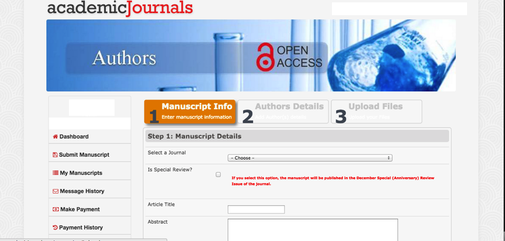
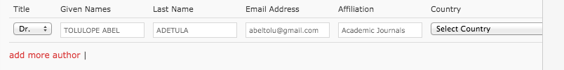
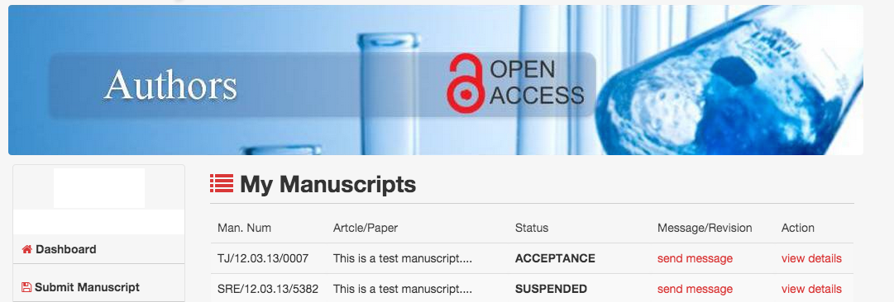
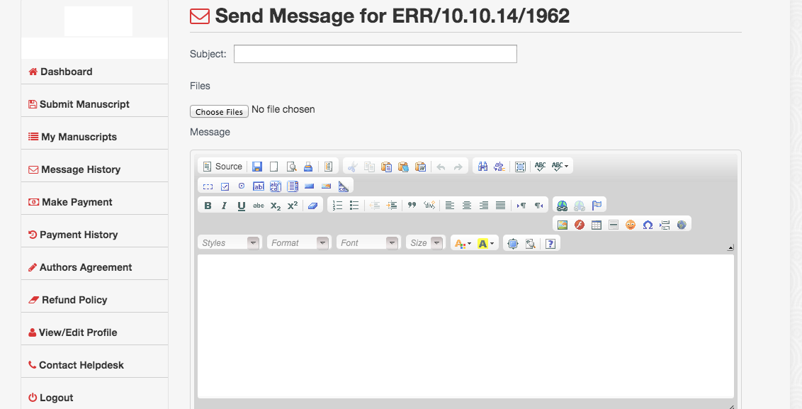
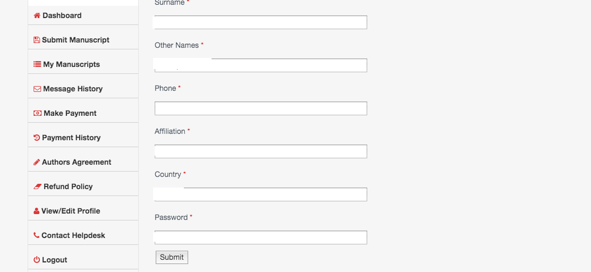
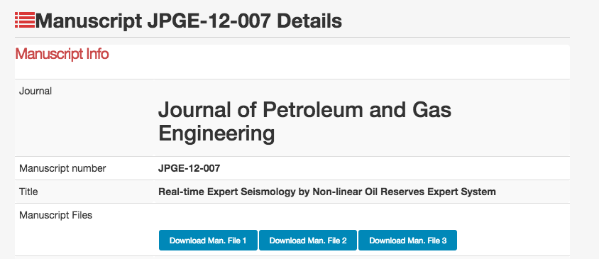
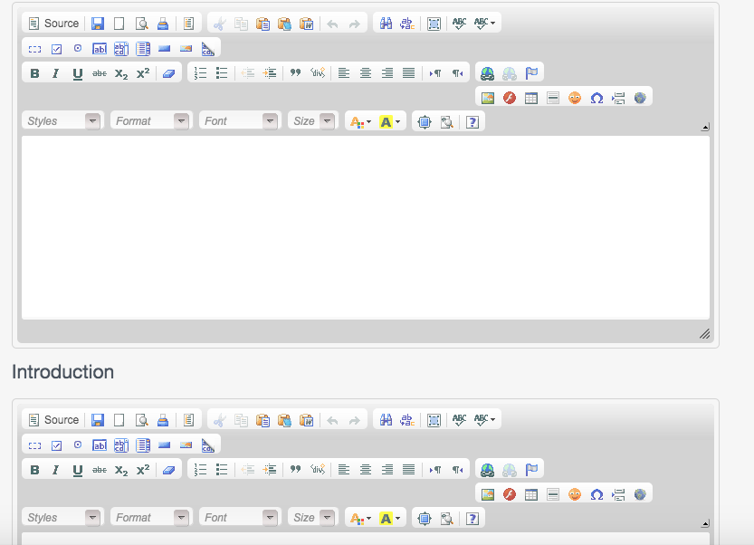
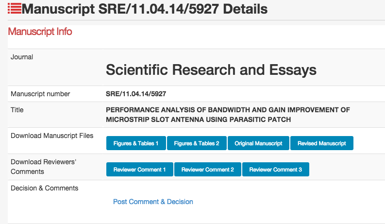
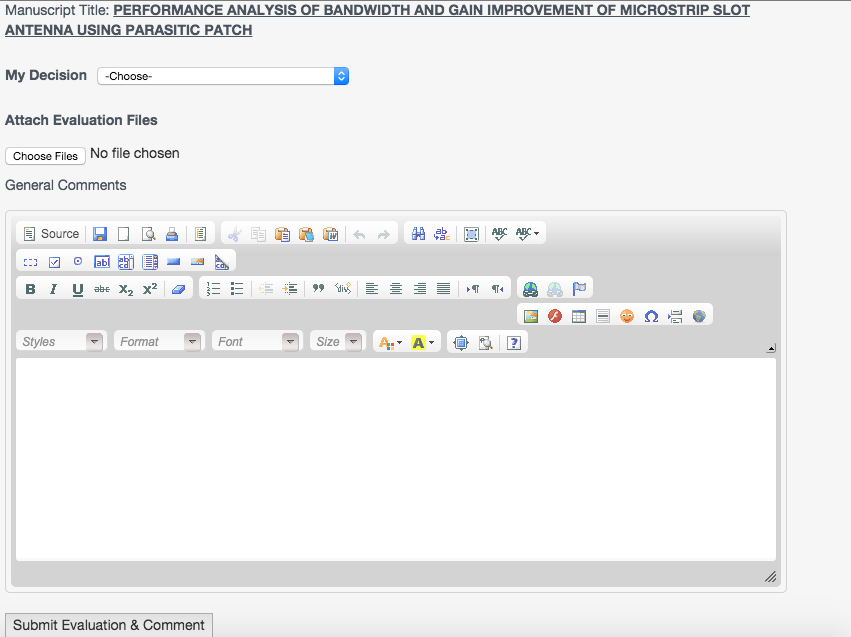

Go to http://ms.academicjournals.org
On successful login, click the ?Submit Manuscript? link. You should see the page below:

There you will find three (3) wizard pages to be compeleted. Please provide accurate details or data.
To add co-authors to your manuscript on the "Submit Manuscript" page, click the "add author" as seen in the image below:

Click the "My Manuscripts" button. A list of your manuscripts will be displayed with their status. See sample in the image below:

To send a message to the Editorial Office, go to "My Manuscripts". You should see a page like this below:
Click the "Send Message" link for the Editorial office your manuscript belongs to.
A page should display like this below:

Click the "Send Message" button.
On the left menu bar of your portal, click the "Contact Helpdesk" link.
Send a message to [email protected]
Reviewers comments are sent as mails to authors.
On the Left side menu on the Author's Page, click the "Make Payment" button.
A list of payments due would be loaded. Please note, this only displays if you have outstanding payments.
To update your profile, click the "View/Edit Profile".
See image below of what you should see:

On the Password field, enter the new password you wish to use.
If you cannot login due to forgotten password, worry less! Visit this page.
Visit this page and complete the form. You will be alerted on approval of your request.
To login as a Reviewer, visit this link.
To download assigned manuscript, click on "Assigned Manuscript" on the left sidebar; this should display a list of manuscripts assinged to you.
Click the "View details" link for the manuscript you want to download. You should see a page like this below:

Note that, the number of download buttons displayed will vary for various manuscript files.
Click the Download button.
Information about author(s) are present on the top of the manuscript files.
Go to assigned manuscripts
Click on the "view details" link for the manuscript you want to evaluate.
To evaluate, click on the "upload comments" link. Please note that you should only evaluate after proper reading of the manuscripts. See sample evaluation page below:

Click here to view a list of mail addresses for all editorial offices.
To view/edit your profile, click the "View/Edit Profile" link.
To become an Editor, send a message with your interest to [email protected].
Visit this page to access the login page for Editors.
Visit the "Assigned Manuscripts" menu. A list of manuscripts assigned to you displays. Click the "view details" button.
A page like this below displays:

Visit the "Assigned Manuscripts" menu. A list of manuscripts assigned to you displays. Click the "view details" button.
A page like this below displays:
Click on the "Post Comment and Decision" link. You should see a page like this below:
